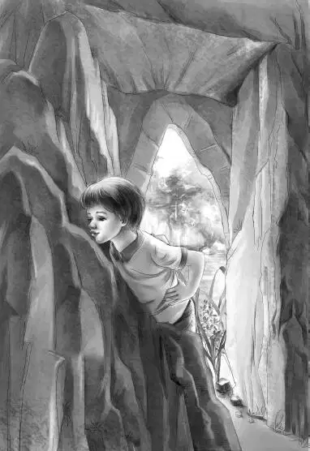

Dr. Osgood promised the family that they could all explore the cave in the morning. They went to bed feeling very much excited.
Mr. Carter and David talked awhile before they went to sleep.
“David，what’s on your mind？What are you afraid of ？” Mr. Carter asked.
There was a long silence. At last David said，“I climbed Flat Top the night before you did. I heard about the rockslide and the hole on a news program， so I came down from Maine fast. I thought I was the last Indian to know about the treasure and it could be mine. I was going to take it，and no fuss.”
“Now supposing this treasure was yours and somebody else found it. Didn’t you think they would give it to you？”
“No，I didn’t think they would.”
“Well，I don’t really blame you，” said Mr. Carter. “Were you afraid of the rangers after you climbed Flat Top？Did you think they knew your secret？”
“I wasn’t sure. But I thought they wouldn’t believe anything I said. I didn’t make a sound，either. I can walk through the woods and up the mountain without making any noise. But I thought they found out somehow. They looked at me so funny that I hid in the woods.”
“Nothing to eat？”
“No. I didn’t dare take anything with me. I thought later I would find out about any treasure，but the rangers found me first.”
“Is that all？” asked John Carter.
“Yes，sir，” said David.
“You couldn’t get up to the cave？You didn’t even look in？”
“No，I couldn’t. There wasn’t any way to get close. I just saw the hole. Then I had to come down.”
“Dave，I want you to understand the Aldens are your friends，” said John Carter.“They are fine people. They want to help you. You must not let them down.”
“No，” said David.“I like them. They wouldn’t cheat me，I know.”
Everyone was up early next morning. They ate breakfast and then drove to the foot of Flat Top.
Soon everyone was climbing up the old trail again. Benny came right after Dr. Osgood. The doctor did not climb so fast today. All of a sudden he looked around at Benny.
“Young man，don’t get your hopes up on that treasure. I didn’t see a single place where it might be. We are going still further into the cave，but I don’t think I missed it.”
“Oh，” said Benny.“Lovan will be disappointed. I was so sure it was right here. That’s where I would have put it，just as far back as I could. And that would be the front now.”
“Well，you’re not an Indian，son，and this isn’t two hundred years ago. Maybe the man had other ideas.”
“I hope not，” said Benny.“Just for Lovan’s sake.”
David was behind Benny.“Did you say Lovan？” he said.“I have heard that name. But she is dead.”
“Our Lovan isn’t dead，” said Benny.“She is ninety years old，though. And she is the one who told us about the treasure.”
“My grandmother told me everyone was dead but me，” said David.
Benny said，“Do you know your grandmother’s first name？”
“Yes，it was Susan.”
Henry was right behind David and he heard the name. He said，“Lovan had a sister Susan. It looks to me as if you are Lovan Dixon’s grandnephew. That would be great，because you could help her. She is getting old now，and she lives all alone.”
“What is she like？” asked David.
“She’s swell！” said Benny.
The family climbed and climbed. It was almost noon when they reached the staging. The workmen were there. They had put a strong light inside the cave for Dr. Osgood. They were just finishing the wiring.
“I’ll go first，” said Dr. Osgood.“And you can all follow me. First you have to crawl in，but soon you can stand up. You’ll see.”

The cave was bigger than the Aldens had expected. There was plenty of room for everyone. Dr. Osgood began at once to chip out another fossil. This time it was a fern，an important find. The fern told him how old the cave was.
Benny watched him for a few minutes. Then he went back and crawled to the door of the cave. David went，too.
“Let’s see if these stones can possibly be moved，” said Benny. He looked at one side of the opening. The big rocks came out to make a large square.
“That looks like a chimney，” said David.
“So it does！” cried Benny.“It looks like a closet in a corner of a room.” He stuck his head out of the cave and called to a workman，“Hey！Please come and look. Do you think anything could be hidden there？”
The man laughed. He said，“We can find out.” He got a small crowbar and a hammer and went to work. Soon he said，“You’re right，Sonny. These rocks don’t belong here. They were moved here.”
Benny didn’t like to be called Sonny，but this was no time to say so. Henry came over to watch. Then he called the girls and Mr. Alden and Mr. Carter.
The workman said，“When this stone falls，there will be clouds of dust. Better cover your eyes.”
They all did so. The man was right. There was such a crash and so much dust that nobody could see or hear what had really happened. When the dust cleared they all looked in the “chimney thing.” And there it was！It was a large black leather bag lying on the ground behind the stone.
Everyone shouted.
“Don’t touch it，” said the workman.“I’ll get Dr. Osgood.”
The doctor could hardly believe what he saw.“I did miss it after all，” he said.“And now let’s see what’s in the bag.”
Everyone watched as Dr. Osgood worked carefully and slowly. Even so，the leather cracked under his gentle fingers. At last he got it open and pulled out an enormous teapot as black as coal.
“Solid silver，” he said quietly.
“Silver？”cried Benny.“It looks more like iron.”
“It’s silver，just the same，” said the doctor.“Wait until it is polished and you’ll see—a real French piece that belonged to royalty.”
Then he drew out a candlestick with six branches. It，too，was black. A large black pitcher came next，all covered with the same deep，fancy pattern that decorated the other pieces. Then Dr. Osgood pulled out a black box. A little black key hung on a black chain.
Dr. Osgood turned the key very gently. Inside was a necklace of gold，set with red and green stones.
“That’s a queen’s necklace，” said Dr. Osgood. “That thing alone is a great treasure.”
Under the necklace were gold coins of France. There was only one more thing in the bag. It was a roll of heavy paper.
“I may not be able to open this，” said Dr. Osgood. “I shall stop if it begins to tear.”
But he was so slow and gentle that the paper did not tear. He took one look.“It’s in French，” he said.“Of course it would be.”
Both Henry and Jessie could read French. The old faded message was short.
“This is for my Indian friend Running Deer who saved my life. Louis Paul Deauville.”
“That settles it！” said Benny.“This belongs to Lovan. And now who will tell Lovan？”
Nobody spoke for a minute. They all looked at each other.
Then Grandfather said with a smile，“David Walking-by-Night will tell Lovan.”